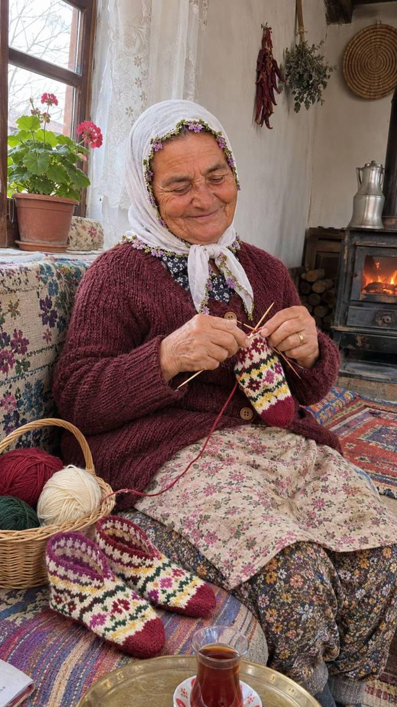
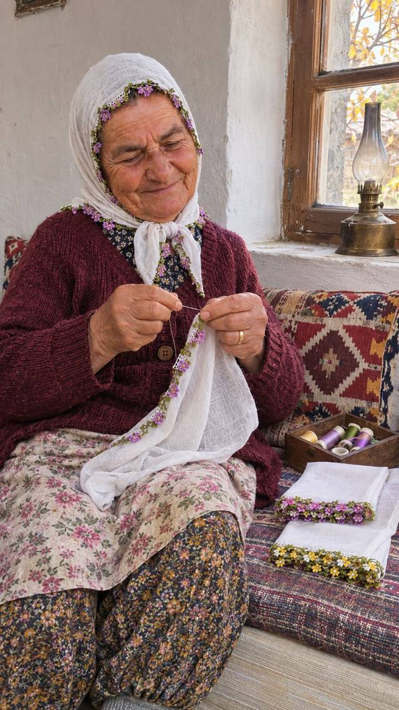
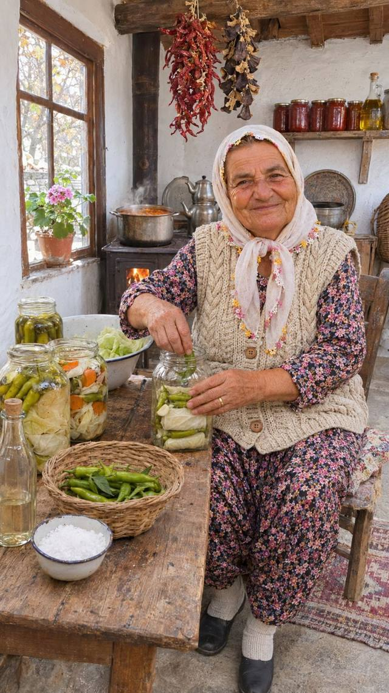
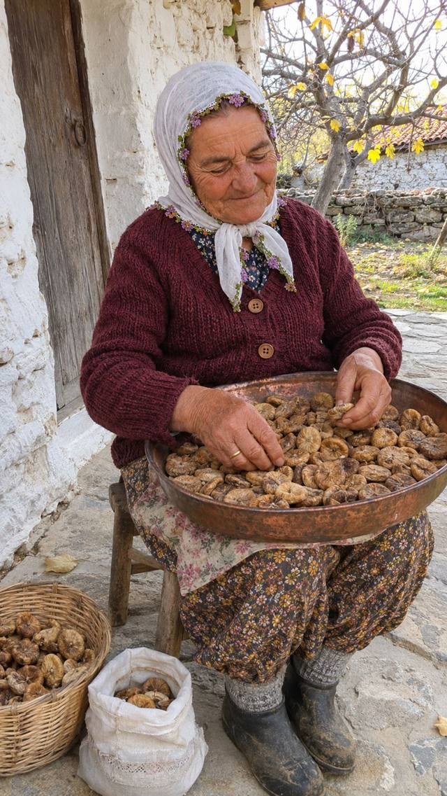
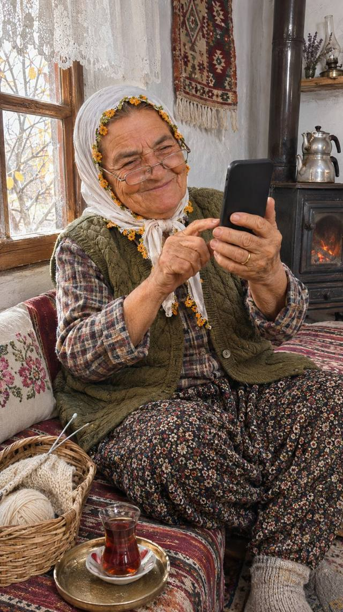

Ege'nin bir köyünde yaşayan, Ege şivesiyle konuşan 75 yaşında bir teyze. Her gün işinin başında kameraya dönüp otuz saniyelik bir hayat dersi veriyor; izleyen kendi annesini, anneannesini görüyor.
Yapay zekâ ile oluşturulmuş kurgusal karakter · Senaryo ve kurgu insan eliyle
Büyümenin tamamı reklamsız, videoların paylaşılmasıyla geldi.
Ulaşılması en zor ve evin alışveriş kararını veren kitleye: ileri yaştaki kadınlar.
Instagram takipçileri, yaşı bilinenler.
Takipçiler tek bir bölgede değil, Türkiye'nin büyük şehirlerine yayılmış.
Aynı video her akşam 18:00'de Instagram, Facebook, YouTube Shorts ve TikTok'ta yayınlanır.
| Platform | Takipçi | Görüntüleme | Dönem | Güncelleme |
|---|
Instagram her gün otomatik, diğer platformlar haftalık olarak güncellenir. YouTube'da abone, diğerlerinde takipçi sayısı.
Anneler videoyu çocuğuna, kadınlar kız kardeşine ve komşusuna yolluyor. Marka mesajı da bu yolla yayılır.
Güven
Önerdiği şey reklam değil, nasihat gibi algılanır. Ege şivesi, el işleri ve köy evi izleyicinin kendi geçmişinden tanıdığı bir dünya kurar.
Kitle
55 yaş üstü takipçi oranı %66, kadın oranı %79. Mutfağın, kilerin, el işinin ve aile hediyelerinin kararını veren kişiler.
Yayılım
Videolar belli bir kişiye gönderilmek üzere kurulur: anneye, eşe, evlada. Bir iş birliği, takipçi sayısının çok ötesine ulaşır.
Hatçe ürünü anlatmaz, kullanır. Ürün hikâyenin doğal bir parçası olur; ders konuşulur, ürün görünür.
Hatçe günlük işini yaparken ürün sahnede yer alır: reçel kaynatırken, patik örerken, sofrayı kurarken.
Mevsime, kampanyaya ya da özel güne göre kurgulanan, markanın derdine uygun bir Hatçe hikâyesi.
Aynı video Instagram, Facebook, YouTube ve TikTok'ta. İstenirse markanın kendi reklamlarında kullanım hakkı.




Brief'inizi ve kampanya tarihinizi gönderin; size özel bir fikir ve teklifle dönelim.
hatce.teyze.ai@gmail.com